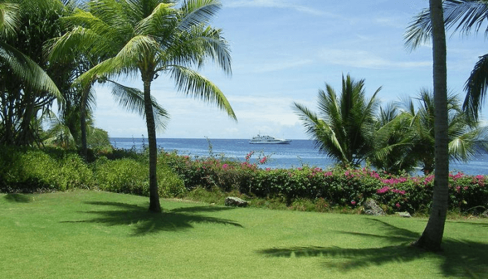
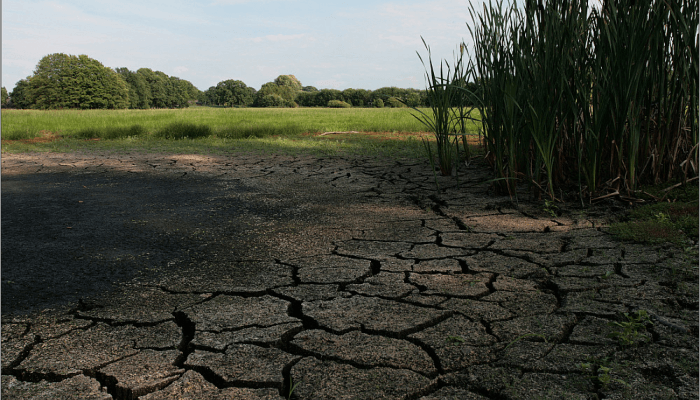

Wer in Australien Urlaub macht freut sich auf einzigartige Landschaften und zum Teil unberührte
Natur. In Australien gibt es eine faszinierende Pflanzenwelt in unterschiedlichen Klimazonen.
Außerdem gibt es Tiere, die nirgendwo sonst zu finden sind als in Australien; Werfen wir also
einen ausführlichen Blick auf die Pflanzenwelt und Tierwelt auf dem australischen Kontinen
Die Pflanzenwelt (Flora) Australiens
Australien ist seit mehr als 200 Millionen Jahren vom Rest der Welt durch Ozeane
getrennt. Auf Grund dessen konnte dadurch eine große Artenvielfalt bei Pflanzen und
Tieren entstehen. Der fünfte Kontinent verfügt über eine sehr spezifische Vegetation und
besitzt etwa 22.000 Pflanzenarten. Von diesen Pflanzenarten kommen ungefähr 90%
nirgendwo anders vor.
Faszinierende Pflanzenwelt im Regenwald
Besonders Eukalyptus- und Akazienbäume gehören der australischen Vegetation an, es gibt
ungefähr über 600 Arten davon. Vor allem der anspruchsvolle Eukalyptusbaum kommt in den
unterschiedlichsten Gebieten vor, auch im heißen und trockenen Zentralaustralien. Sie werden
bis zu 90 m hoch. Es gibt drei große Vegetationszonen der australischen Pflanzenwelt, die
folgendermaßen aufgegliedert sind:

Tropische Zone
Die tropische Zone befindet sich entlang der Nordküste bis etwa zur Mitte der Ostküste. Sie
fällt in den Bereich des Monsunklimas und ist stark bewaldet überwiegend mit Laubbäumen;
Regenwälder findet man an der nordöstlichen Küste von Queensland einschließlich der Kap-York
Halbinsel. Kletter-und Farnpflanzen und Palmen gedeihen zwischen Eschen, Eichen, Zedern,
Flaschenbäumen sowie Birken.
Entlang der niedrigen nördlichen Küstenlinie ziehen sich an den stehenden Gewässern sowie
Einbuchtungen die wundervollen Mangrovenwäder. Im Landesinneren wo überwiegend
Savannenlandschaft mit niedrig wüchsigen Bäumen existiert, gehört auch meist das
Hartlaubgewächs dazu, welches typisch für die einheimische Flora ist.
Gemäßigte Zone
Die gemäßigte Zone verläuft über die südöstliche Küstenebene und Tasmanien und zieht sich an
der Ostküste in nördlicher Richtung bis zur tropischen Zone heran. Die gemäßigte Zone ist
gezeichnet von vielen Busch- und Waldlandschaften aus Hartlaubgehölzen, Pflanzen des
gemäßigten Klimas sowie Savannenwäldern.
Typisch für das gemäßigte Klima sind die Mallee-Scrubs, Strauchvegetationen, strauchförmige
Sandheide und Regenwaldgebiete mit Pflanzenwuchs. In den australischen Alpen und den
Berglandschaften Tasmaniens kommt überwiegend alpine Vegetation vor. Bestände aus Kiefern
gibt es entlang der Ostküste bis Tasmanien. Kiefern stehen hinsichtlich ihrer
wirtschaftlichen Bedeutung an zweiter Stelle, an forderster Front stehen die vielen
Eukalyptusarten.
Von der Abholzung ausgeschlossen gehören die Huonkiefern, die zu selten gewordenen Arten
zählen. Die Eukalyptusarten dominieren überwiegend in den bewaldeten Gebieten der warmen und
gut bewässerten südöstlichen und südwestlichen Bereiche. Tasmanien ist für seine
Buchenwälder im Süden und die floristische Verwandtschaft zu Neuseeland bekannt.

Trockenzone
Die Trockenzone befindet sich im gesamten mittleren, ariden Bereich und dem Westen des
fünften Kontinents.Die Vegetation hier ist dem ariden Klima angepasst, gegenüber den
Eukalyptusbäumen überwiegen hier die Akazien (insgesamt ebenfalls 500 Arten). Für den
Pflanzenbewuchs im Westen Australiens kommen zwei Eukalyptusarten in Frage, der so genannte
Jarra- und der Karri Eukalyptus. Sie werden wegen ihres harten und beständigen Holzes
geschätzt.
In Australien gibt es ungefähr 2000 eingeführte Pflanzenarten. Die meisten von ihnen kamen
mit der Entwicklung von Land-, Weide-, und Forstwirtschaft ins Land. Es wird angenommen dass
bis zur Zeit der Besiedlung durch die ersten Europäer, bis zu einem Viertel des Landes von
Waldsavannen, Buschbeständen und Wäldern bedeckt war. Leider wurden in den darauf folgenden
etwa 200 Jahren ein Großteil der einheimischen Flora vernichtet, um dafür Raum für die
Besiedlung und die landwirtschaftliche Nutzung zu schaffen.
Dies führte zu einer Verschärfung der Erosion und zu dem unwiderruflichen Verschwinden von
über 80 einheimischen Pflanzenarten. Bis zum heutigen Tage sind weitere 840 Arten vom
Aussterben bedroht; Auf Grund dessen, dass die Fauna und Flora in Australien gefährdet
waren, reagierte das Land und errichtete großflächige Naturschutzgebiete, die auch Teile des
Meeres umfassen. Etwa 12% der Landesfläche wurden zu solchen Schutzgebieten erklärt. Davon
gehören elf Gebiete dem Weltkulturerbe an.
Die Tierwelt (Fauna) Australiens
Der Höhepunkt einer jeden Australienreise ist die besondere Tierwelt des fünften
Kontinents. Die Besonderheiten der Tiere ist, dass sie entweder nur in Australien leben
oder bei uns lediglich im Zoo zu sehen sind.
Gefährliche Tiere im Wasser
Wenn man sich über gefährliche Tiere im Wasser erkunden möchte bevor man z.B. einen
Tauchtrip macht, kann man sich im Sydney Aquarium über die vielen gefährlichen Tiere
einen Überblick verschaffen. Es ist sehr interessant wie viele verschiedene gefährliche
Tiere vor der Küste Australiens leben. Viele von ihnen sehen eher ungefährlich aus,
können den Menschen aber einerseits verheerende Schmerzen zufügen oder gar tödlich für
ihn sein.